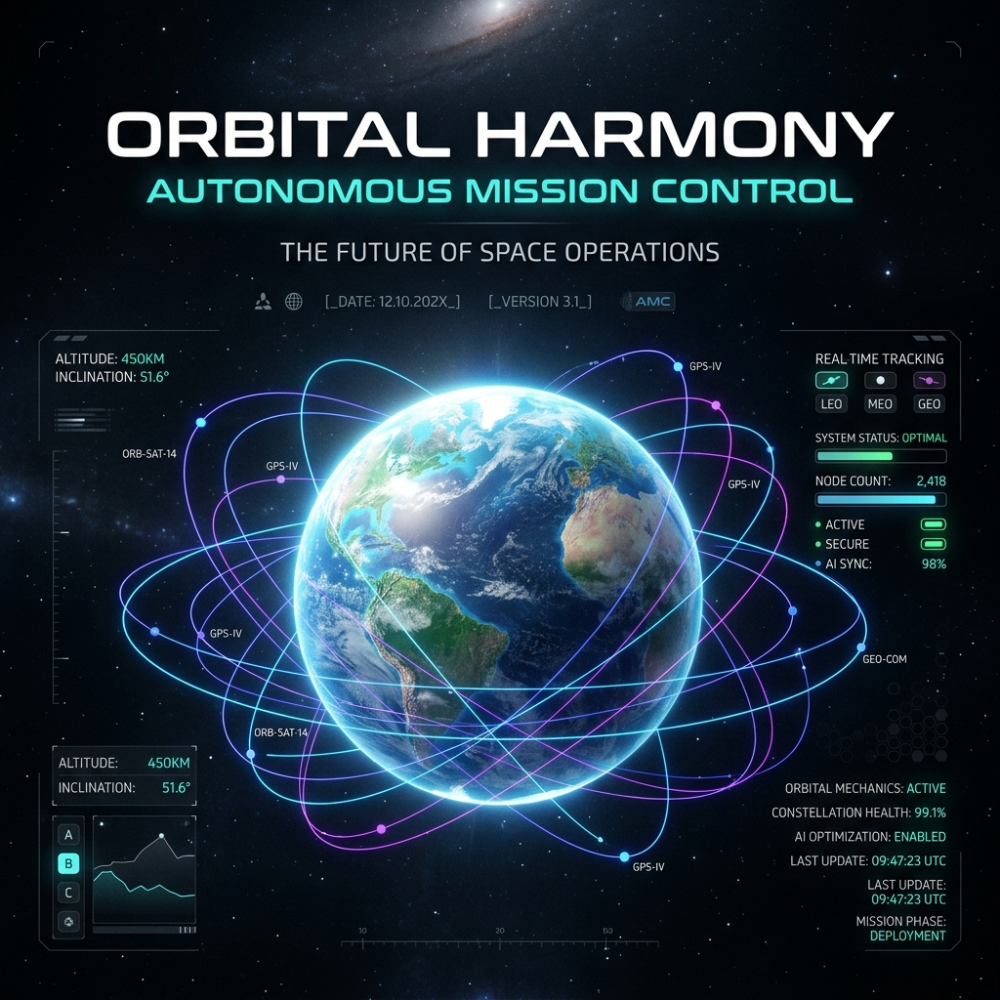
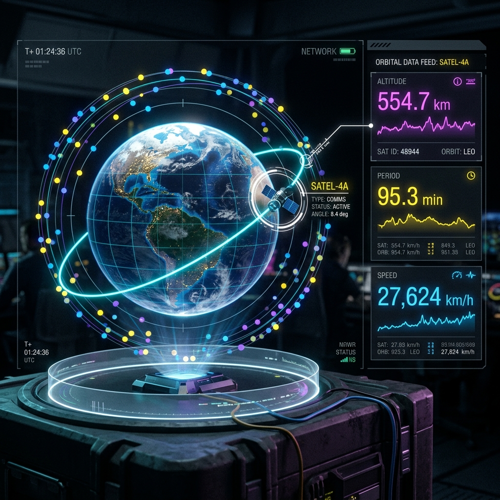
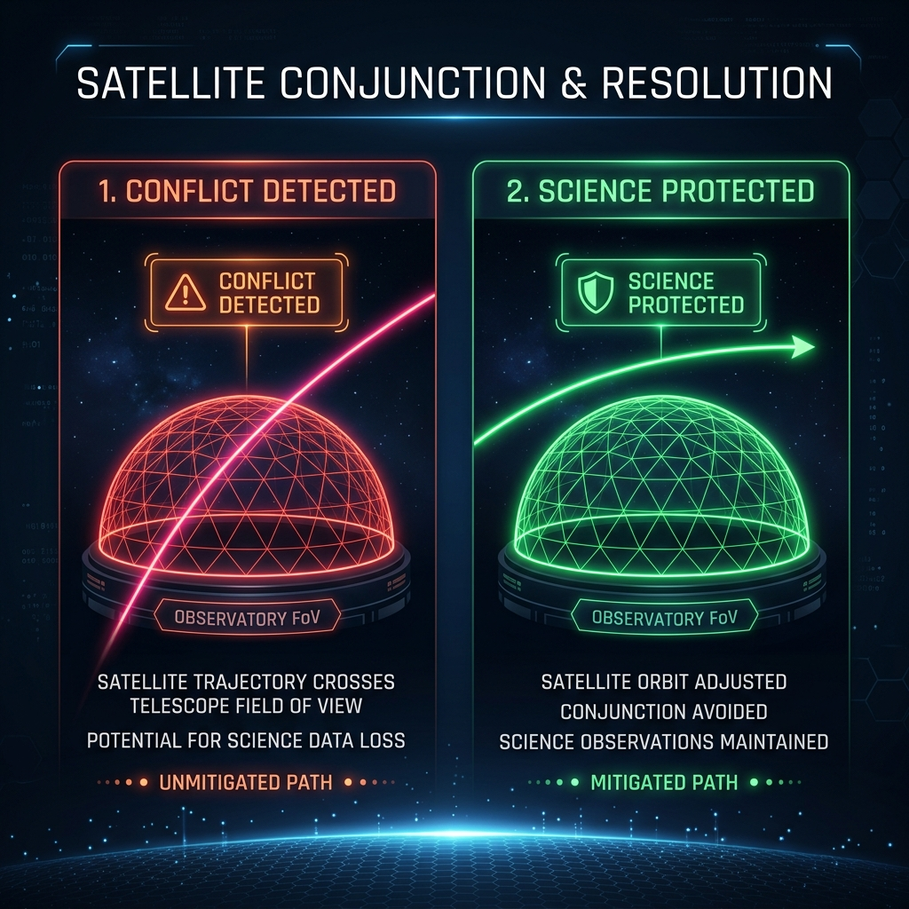

Complete Demo Manual: Landing Elements, Interactive Globe, Buttons, and Backend Explanations

The landing page is designed to provide immediate atmospheric immersion (sci-fi dark mode) and establish the megaconstellation threat crisis. Here is exactly what is on the page:
PROTECTING HUMANITY'S VIEW OF THE UNIVERSE in bold, glowing text.Four glowing glass panels displaying real-world simulation baselines:
As the user scrolls, the page highlights five stages of a collision incident, each featuring a specific interactive HUD graphic:
The core visual centerpiece of the dashboard is the interactive 3D Globe. Here is a guide to its mechanics:

Every interactive button on the Mission Control dashboard is documented below:
| Button / Control | Location | What It Does (Functionality) |
|---|---|---|
| Logo Header | Top Left | Returns the user to the landing page. |
| LIVE Button | Top Center | Resets the simulator time back to the current real-world UTC time. |
| +1h, +6h, +1d, +1w | Top Center | Skips the simulation clock forward. The satellites instantly jump to their calculated mathematical positions for that future date. |
| Play/Pause (▶ / ❚❚) | Top Center | Pauses or resumes the continuous orbit calculations. |
| Speed Multipliers (1x - 1000x) | Top Center | Changes how fast time flows. 1000x makes satellites fly around the globe, showing orbital paths clearly. |
| Density (HIGH / MED) | Top Right | Toggles rendering load. "MED" hides half of the satellites to ensure smooth rendering on slower computers. |
| RUN DEMO Button | Top Right | Triggers the automated threat demonstration scenario. |
| Observation Rows | Left Panel | Clicking a row highlights that celestial target (such as an asteroid or transit exoplanet) and changes the right panel to show target coordinates. |
| Close button (✕) | Right Panel | Closes the telemetry details card and returns to default dashboard state. |
The platform models intersections by evaluating telescope fields-of-view against satellite trajectories. The diagram below illustrates the conjunction hazard and the shifted window calculation:

[Step 1: Start on Home Page]
"Hello everyone, today I am presenting Orbital Harmony: our autonomous operations system built to protect astronomical observations from mega-constellation interference."
[Step 2: Scroll past the 5 Acts Cards]
"As constellations grow, satellites crossing telescope fields of view ruin deep-space images. Here, our page walks you through a real example: a telescope tracking a stadium-sized asteroid. The system detects an incoming Starlink satellite, predicts a 94% contamination risk, and computes an optimized shift window to save the observation. Let's look at this live."
[Step 3: Click Enter Mission Control]
"This is our Mission Control dashboard. In the center is our interactive 3D Globe. On the left, we monitor online observatory nodes—specifically Hanle and Devasthal stations—and track the active queue of celestial targets scheduled for tonight."
[Step 4: Click a satellite dot on the globe]
"We can select any individual satellite on the globe to pull its live telemetry, speed, altitude, and period metrics on the fly. The orbit coordinates are computed using actual SGP4 calculations."
[Step 5: Click RUN DEMO]
"Let's simulate a live conflict. Clicking 'Run Demo' triggers our predictive scheduler. The screen flashes red as a Starlink satellite approaches the telescope pointing cone. Our AI Solver immediately intercepts, runs checks against the queue, and commits an eighteen-minute delay shift. The observation is saved with 100% data recovery, and our system logs return to nominal."
[Step 6: End Video]
"This confirms the core features are robust, optimized, and fully operational. Thank you for your time."
d:\orbital-harmony-sync-main\orbital-harmony-sync-mainpresentation_guide.html. It will open in your default browser.